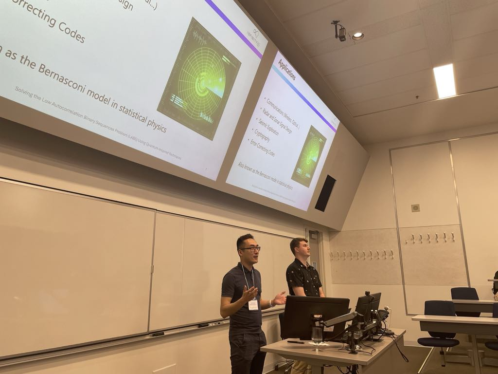
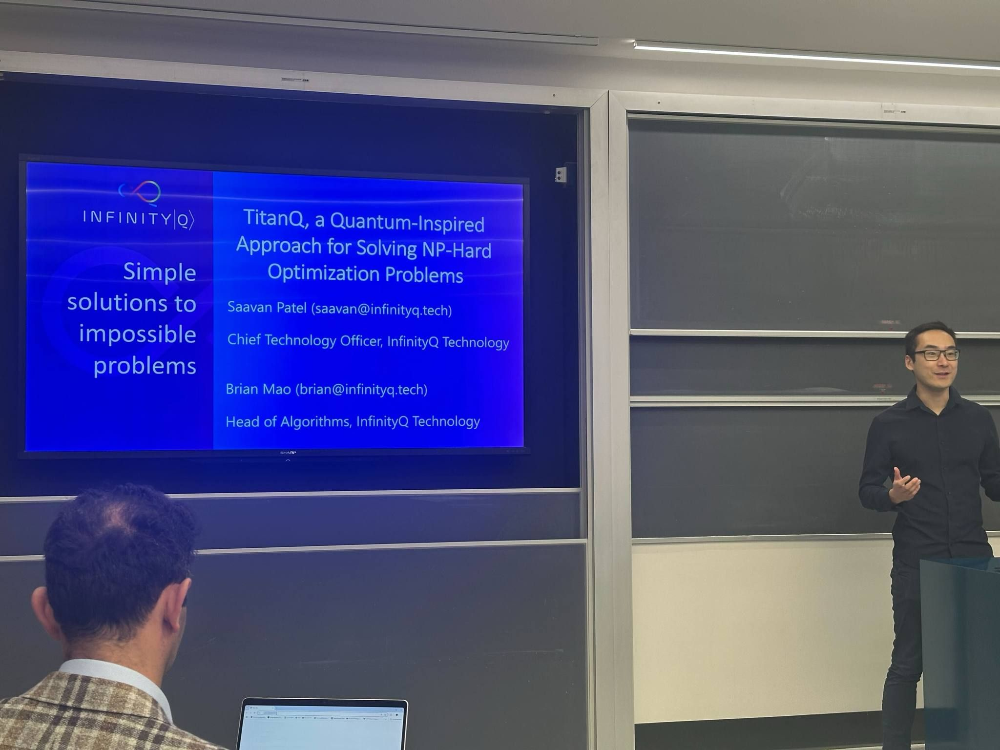
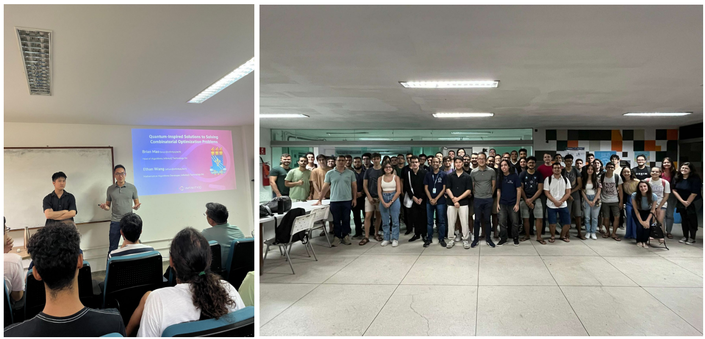
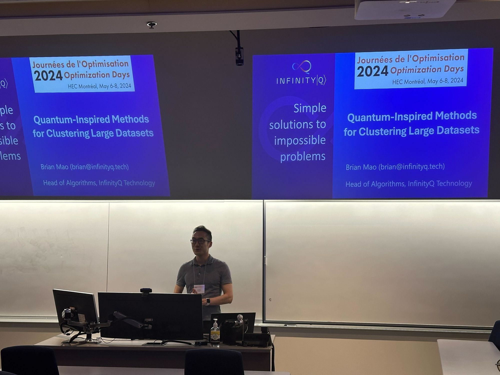

Conferences
2025 Optimization Days (JOPT) Conference
Solving the Low Autocorrelation Binary Sequences (LABS) Problem using Quantum-Inspired Techniques
The Low Autocorrelation Binary Sequences (LABS) problem, also known as the Bernasconi model in statistical physics, is a classically intractable problem with many practical applications such as communications engineering, radar and sonar. The complexity of the LABS problem grows rapidly with optimal solutions only known for N≤66. In this work, a novel probabilistic quantum-inspired approach for this problem was formulated and solved. The Metropolis Hastings sampling algorithm was used in conjunction with Parallel Tempering facilitating exploration and exploitation of the state space. This work represents the first demonstration of a GPU accelerated solution to the LABS problem, creating a 1500% improvement in speed over a CPU only version. Low-level system design optimizations such as dynamic mixed precision allowed full device utilization for this compute-bound problem. This approach yielded time-to-solution scaling of 1.229^N and number of calls scaling of 1.187^N, whereas the best-known classical heuristic, memetic tabu search yielded a number of calls scaling of 1.35^N. It also performed similarly to true quantum methods, such as QAOA+QMF, with regards to scaling constant, and considerably better in terms of wall clock time. All LABS problems of size N≤66 were solved to optimality while directly handling higher order polynomials of the fourth order. Additionally, speed improvements of over 150,000x were demonstrated against both Gurobi and CPLEX.

Montreal Network Science Workshop 2025
TitanQ, a Quantum-Inspired Approach for Solving NP-Hard Optimization Problems
This talk introduces InfinityQ’s TitanQ platform, a quantum-inspired approach for solving NP-Hard optimization problems. TitanQ leverages probabilistic Ising Machines, including techniques like Boltzmann Machines, to scale beyond 400,000 variables for mixed integer quadratic optimization. We will showcase its advantages through industrial and some academic applications. In finance, TitanQ achieves >1000x speedup compared to Gurobi in Mixed Integer Quadratically Constrained Quadratic Problems (MIQCQP) for index tracking. In logistics, it solves constrained clustering problems of >20,000 variables 100-1000x faster than Gurobi. Additionally, we present advancements in higher order binary optimization with TitanQ, achieving superior scaling (\(1.25^N\)) in the Low Autocorrelation Binary Sequences Problem, a notable academic challenge. These results highlight TitanQ’s industrial and academic breakthroughs.

Universidade Federal da Paraíba (UFPB) Invited Talk
Quantum-Inspired Solutions to Solving Combinatorial Optimization Problems
Quantum computing has emerged as a promising paradigm for tackling combinatorial optimization problems that are intractable for classical computers. TitanQ is a SDK developed by InfinityQ Technology Inc. utilizing a variety of quantum-inspired algorithms to solve large optimization problems across a large variety of domains such as logistics, finance, energy, and the life sciences. These methods range from simulated annealing to more advanced variants such as parallel tempering and simulated quantum annealing. At their core, these algorithms leverage principles from statistics to address optimization problems as probabilistic models rather than deterministic ones. By interpreting hard optimization problems as sampling from complex distributions, we gain insights into their inherent complexities and devise more robust strategies for finding optimal solutions.

2024 Optimization Days (JOPT) Conference
Quantum-Inspired Methods for Clustering Large Datasets
Clustering is often applied throughout many different application areas, such as social networks and vehicle routing, to generate structure within datasets by grouping associated data points with strong similarity. However, most traditional clustering algorithms do not incorporate constraints that may arise in real world problems, while also using heuristics which can negatively impact cluster quality. A novel clustering algorithm is formulated and solved using quantum-inspired computing through the TitanQ platform to incorporate these constraint types, while directly solving the clustering problem via distance minimization. One example of a constraint is the generation of balanced clusters, where the number of nodes within each cluster is approximately equal. Quantum and quantum-inspired techniques, including mappings to Quadratic Unconstrained Binary Optimization (QUBO) formulations, are leveraged to solve large-scale problems. This provides the ability to potentially utilize next generation hardware to increase problem scale, solution quality, and solution speed. Native constraints are also included to enforce valid clustering solutions among the binary variables used to represent cluster assignments. This allows for increased algorithmic performance, with the addition of a novel compression scheme to induce memory improvement. Resulting clusters from the algorithm were also benchmarked against Lloyd’s algorithm on a dataset containing approximately 3000 data points.
